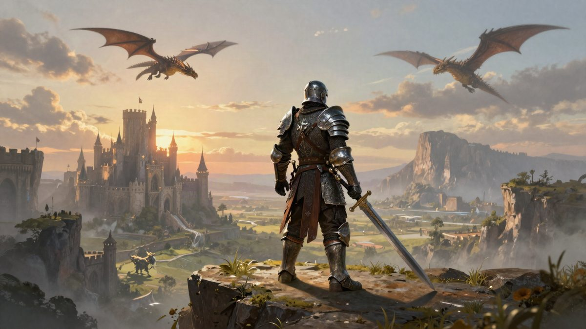

WoW: Forever oborio rekord s najviše istodobnih igrača u povijesti serijala

Blizzard je objavio da je World of Warcraft: Forever nakon lansiranja 4. studenoga 2026. postavio rekord po vršnom broju istodobnih igrača i po broju igrača koji su se vratili. Holly Longdale tvrdi da je to i najviše novih igrača na lansiranju WoW-a u 15 godina, ali brojke nisu navedene.
Blizzard je na društvenim mrežama objavio da je World of Warcraft: Forever nakon lansiranja 4. studenoga 2026. postavio dva rekorda u povijesti serijala. Na vrhuncu ima najviše istodobnih igrača od svih dosadašnjih lansiranja WoW-a, a vratilo se i najviše igrača nego ikad. Konkretne brojke Blizzard nije naveo.
Izvršna producentica i potpredsjednica za World of Warcraft Holly Longdale dodala je treći podatak: igra bilježi najviše novih igrača na lansiranju WoW-a u 15 godina. Zahvalila je igračima i poručila da su dobrodošli svi koji Azeroth upoznaju prvi put, kao i oni koji ga, kako je napisala, igraju "prvi put ponovno".
Što donosi igra
Blizzard je WoW: Forever prvi put predstavio na BlizzConu 2026. Igra želi biti što bliža originalnom, takozvanom vanilla WoW-u. Tu su nove zone, više od 1.000 novih questova, poboljšani PvP, više dungeona te nove profesije i reputacije za grindanje. Dodani su i ažurirani vizuali, nova rasa koju igrači mogu istražiti i level cap od 60.
Insider Gaming piše da je jedan od developera rekao kako WoW: Forever nije napravljen za igrače retail verzije igre.
Netflix i Blizzard
Na istom BlizzConu Blizzard i Netflix najavili su dogovor o adaptacijama Diabla i Overwatcha za tu platformu.
Izvor: Insider Gaming